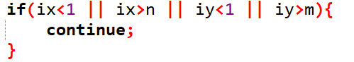

应该是一道经典的bfs广搜题
青铜莲花池——题目
题目描述
$Farmer John$ 建造了一个美丽的池塘，用于让他的牛们审美和锻炼。这个长方形的池子被分割成了$ M $行和$ N $列 $( 1 \leq M \leq 30 ; 1 \le N \le 30 )$ 正方形格子的 。某些格子上有惊人的坚固的莲花，还有一些岩石，其余的只是美丽，纯净，湛蓝的水。
贝茜正在练习芭蕾舞，她从一个莲花跳跃到另一个莲花，当前位于一个莲花。她希望在莲花上一个一个的跳，目标是另一个给定莲花。她能跳既不入水，也不到一个岩石上。
令门外汉惊讶的是，贝茜的每次的跳跃像国际象棋中的骑士一样：横向移动$M1 (1 \leq M1 \leq 30 )$，然后纵向移动$M2 (1 \leq M2 \leq 30 ; M1 \neq M2 )$ ，或纵向移动$M1$，然后横向移动$M2$。贝茜有时可能会有多达8个选择的跳跃。
给定池塘的布局和贝茜的跳跃格式，请确定贝茜从从她的出发位置，到最终目的地，最小的跳跃次数，贝茜在给出测试数据一定可以跳到目的地。
输入格式
第 1 行：四个用空格隔开的整数: $M$，$N$，$M1$，$M2$。
第 2..$M + 1$ 行：第 $i + 1$ 行 有 $N$ 个整数，表示该位置的状态：$0$ 为水； $1$ 为莲花； $2$ 为岩石； $3$ 为贝茜开始的位置； $4$ 为贝茜要去的目标位置。
输出格式
*第 1 行：一个整数，从起始点到要去的位置，贝茜最小的跳跃次数。
样例 #1
样例输入 #1
1
2
3
4
5
| 4 5 1 2
1 0 1 0 1
3 0 2 0 4
0 1 2 0 0
0 0 0 1 0
|
样例输出 #1
解析
不难看出这道题应该采用广度优先搜索（bfs），那就以bfs模板（也不完全是）为框架，将这道题不同之处用你聪明的大脑填入“框架”中。（By the way，不习惯于STL中的queue的，可以自己用数组和头尾指针来代替）
首先，根据题目，贝同学会有8个方向的跳跃，分别由$M1$和$M2$的不同位置及方向决定的。那我们就用最stupid的做法：
当然，防止RE的悲剧发生，我们要提前将这些坐标判断一下。

先讲一下原理：因为这8个方向是一个整体，so我们可以在循环外q.pop()，来保证搜索的点一“一”对应。同时，这8个点层数就+1。为了方便，我们不妨在结构体中直接定义step来简化我们的程序。你也不知道贝同学这8个点是不是都不会掉水里or撞石头上
防止可怜的贝同学迷路（程序死循环），我们需要慷慨地将她走过的坑路做一个记号。鉴于输入时是int格式，所以如果$a_{i,j}$==0，那我们先将其赋值为1，然后加入队列温暖的大家庭。
当然，在我们的bfs函数的开头，别忘设置队列的初始值哦。
这道题想明白了，你离bfs最只因基本思路的打通就不远了
AC代码
C++
1
2
3
4
5
6
7
8
9
10
11
12
13
14
15
16
17
18
19
20
21
22
23
24
25
26
27
28
29
30
31
32
33
34
35
36
37
38
39
40
41
42
43
44
45
46
47
48
49
50
51
52
53
54
55
56
57
58
59
60
61
62
63
64
65
66
67
68
69
70
71
72
73
74
75
76
77
78
79
80
81
82
83
84
| #include<bits/stdc++.h>
using namespace std;
int n,m,m1,m2;
int a[35][35];
int x,y;
struct point{
int xx,yy,step;
};
void bfs(){
point f1;
f1.step=0;
f1.xx = x;
f1.yy = y;
queue<point> q;
q.push(f1);
while(q.empty()!=1){
for(int i=0;i<=7;i++){
int ix,iy;
if(i==0){
ix = q.front().xx+m1;
iy = q.front().yy+m2;
}
if(i==1){
ix = q.front().xx+m2;
iy = q.front().yy+m1;
}
if(i==2){
ix = q.front().xx+m2;
iy = q.front().yy-m1;
}
if(i==3){
ix = q.front().xx+m1;
iy = q.front().yy-m2;
}
if(i==4){
ix = q.front().xx-m1;
iy = q.front().yy-m2;
}
if(i==5){
ix = q.front().xx-m1;
iy = q.front().yy+m2;
}
if(i==6){
ix = q.front().xx-m2;
iy = q.front().yy+m1;
}
if(i==7){
ix = q.front().xx-m2;
iy = q.front().yy-m1;
}
if(ix<1 || ix>n || iy<1 || iy>m){
continue;
}
if(a[ix][iy]==4){
int st = q.front().step+1;
printf("%d",st);
return;
}
if(a[ix][iy]==1){
a[ix][iy]=0;
point f;
f.step = q.front().step+1;
f.xx = ix;
f.yy = iy;
q.push(f);
}
}
q.pop();
}
}
int main(){
scanf("%d%d%d%d",&n,&m,&m1,&m2);
for(int i=1;i<=n;i++){
for(int j=1;j<=m;j++){
scanf("%d",&a[i][j]);
if(a[i][j] == 3){
x = i;
y = j;
}
}
}
bfs();
return 0;
}
|
本篇题解为王某的处女作，希望今后能与全国（世界）信竞生一起努力，一起拼搏，一起收获。